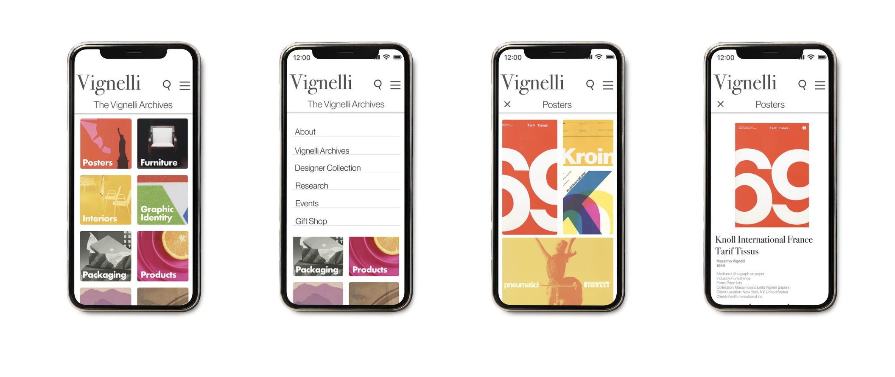

Case Study · Academic Project
Vignelli
Archive.
Reimagining a design legend's archive as an app that actually feels like his work.

Case Study · Academic Project
Reimagining a design legend's archive as an app that actually feels like his work.
01 · Overview
The Vignelli Center for Design Studies at RIT wanted to redesign their digital archive of Massimo and Lella Vignelli's work. The goal was to make the archive more accessible without requiring a visit to Rochester in person, which can cost both time and money.
My partner and I were tasked with tackling this problem. Pretty quickly we realized that a simple website refresh wasn't going to cut it. It was an opportunity to rethink the whole experience.
02 · The Problems
The existing Vignelli Archive site had several UX and design challenges that together made the experience frustrating and hard to navigate.
That last point felt especially important. A designer whose entire career was built on precision and clarity had a digital archive that reflected almost none of that.
Redesign the digital archive into an experience that is more intuitive, user friendly, and congruent with the aesthetic of Massimo Vignelli.
03 · Design Process
Early on, my partner and I agreed that the format should change. A mobile app made a lot of sense. It would allow for easier access and more accessibility of the archive, making it something people could explore from anywhere without needing to visit in person. Mobile also pushed us to be more intentional about what information actually needed to be on screen at any given moment, which aligned with Vignelli's own design philosophy.
This is where my partner and I didn't initially agree. The question of what a user sees first shapes everything about how the product feels. My partner leaned toward an editorial landing page that introduced Vignelli as a figure before getting into the archive. It made sense, but when we looked at who would actually be using this, the answer became clearer.
The decision
Our main user groups are students, researchers, and people who already know who Vignelli is and came specifically to look at his work. They don't need an introduction. We landed on bringing users directly into the archived works on launch, with browsing and filtering front and center.
Working through that disagreement was actually really valuable. It forced us to be explicit about who we were designing for and what their actual goal was when they opened the app. That clarity shaped every decision after it.
Massimo Vignelli was very particular about design. Strong typographic hierarchy, a limited color palette, and the elimination of anything unnecessary. Designing an archive of his work meant those weren't just aesthetic preferences, they were almost requirements.
We leaned into his visual language throughout. Clean grids, high contrast, generous white space, and typography doing most of the work. The goal was for someone to open the app and immediately feel like it belonged to Vignelli's world.

Final app screens reflecting Vignelli's visual language: disciplined grids, clear hierarchy, and minimal color.
04 · Outcomes
The project went really well. The final product addressed every major issue from the original site. But the outcome that meant the most was what happened after we presented.
Our work directly influenced the Vignelli Center's actual site redesign process.
The mobile-first framing proved to be the right call for broader accessibility.
A cohesive visual language that genuinely honored Vignelli's design philosophy.
Finding out that our work had a real impact on the direction of the actual Vignelli Center redesign was one of the more validating moments I've had as a designer so far.
05 · Reflection
This project taught me a lot about designing for a specific user with a specific intent. The landing page debate was a useful exercise in grounding design decisions in the actual user rather than personal preference. It's easy to go with what feels right aesthetically. It's harder and more valuable to ask who is actually going to use this and what do they need the moment they arrive.
Working within Vignelli's visual constraints was also a really interesting challenge. It pushed me to be more deliberate and less decorative, which is something I try to bring into every project since.